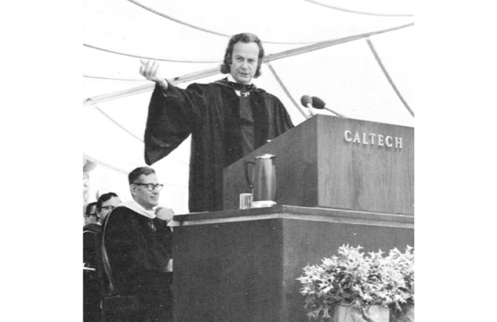

The first principle is that you must not fool yourself—and you are the easiest person to fool,” Richard Feynman said in a 1974 commencement address at Caltech. He wasn’t speaking as a lofty philosopher but as a working physicist, offering a practical guide to daily work. He had little patience for prestige, authority, or explanations that couldn’t be tested. “It doesn’t matter how beautiful your theory is, how smart you are, or what your name is,” he liked to say. “If it doesn’t agree with experiment, it’s wrong. In that simple statement is the key to science.” Students often giggled at first, but then became silent as it sank in.
Feynman was a man of contrasts—lively, irreverent, and deeply suspicious of explanations that sounded good but didn’t cash out in practice. Instead, he emphasized curiosity and intolerance for nonsense. And when things got too stuffy, he preferred playing the bongo drums. Feynman had a strong instinct to understand things by doing them, not by reading about them. Just as with physics, he didn’t want descriptions, he wanted participation. Curiosity didn’t need justification. And yes, he won the Nobel Prize in Physics. He invented a visual way to understand how light and matter interact—diagrams that let physicists see complex processes at a glance.
As a teenager, Feynman repaired radios without schematics. In his last act as a public figure, he exposed the cause of the 1986 Space Shuttle Challenger disaster. Despite being ill with cancer, he cut through NASA’s flawed reasoning, insisted on speaking to engineers rather than administrators, and demonstrated O-ring failure with a simple glass of ice water on live television. In his mind, fixing radios and explaining the Challenger disaster were the same problem. In both cases, authority had obscured reality, and a simple experiment was enough to reveal it. That way of thinking—forged long before machine learning and neural networks—turns out to be uncomfortably relevant today.
You can imagine Feynman being tempted to rise and ask a deceptively simple question: How do you know?
If Feynman were alive and wandering through our technological landscape, it’s hard to imagine him standing on a stage at an AI product launch. He disliked hype. He was suspicious of grand promises delivered before the details were understood—of applause standing in for questions. Instead of unveiling a finished product, he’d likely say something like, “I don’t really know what this thing does yet—that’s why I’m interested in it.” He might take the demo apart and break it, before fixing it and putting it back together. That alone would drain the room of hype and dampen the mood of anyone hoping for a smooth pitch, such as investors and stakeholders.
It is easier to imagine him sitting in the last row of a darkened auditorium, notebook in hand, watching carefully. On the screen, colorful animations glide past: neural networks glowing, data flowing, arrows pointing confidently upward, unencumbered by error bars, a demo that works beautifully, provided nothing unexpected happens. A speaker explains that the system “understands language,” “reasons about the world,” “discovers new knowledge.” Each claim is met with nods and polite applause. You can see Feynman being tempted to rise and ask a deceptively simple question: How do you know?
But Feynman, new to this spectacle, would wait. He would listen for the moment when someone explained what the machine does when it fails, or how one might tell whether it truly understands anything at all. He would notice that the demo works flawlessly—once—and that no one asks what happens when the input is strange, incomplete, or wrong. He would hear words doing a great deal of work, and experiments doing very little.

UTTER HONESTY: In his 1974 commencement speech at Caltech, Richard Feynman told students scientific integrity depends on “utter honesty.” Experiments should “try to give all of the information to help others to judge the value of your contribution; not just the information that leads to judgment in one particular direction or another.” Credit: Wikimedia Commons.
Artificial intelligence is being presented to the public as a transformative force—one that promises to revolutionize science, medicine, education, and creativity itself. In many ways, these claims are justified. Machine learning systems can detect patterns at scales no human could manage: predicting the three-dimensional structures of proteins, screening images of tissue and cells for changes, identifying rare astronomical signals buried in noise, and generating fluent text or images on demand. These systems excel at sifting through oceans of data with remarkable speed and efficiency, revealing regularities that would otherwise remain hidden.
Feynman would not have dismissed any of this. He was fascinated by computation and simulation. He helped pioneer Monte Carlo methods (simulating many possible outcomes at random and averaging the results) at Los Alamos National Laboratory, and computational approaches to quantum mechanics. Used well, AI can help scientists ask better questions, explore larger parameter spaces, and uncover patterns worth investigating. Used poorly, it can short-circuit that process—offering answers without insight, correlations without causes, and predictions without understanding. The danger is not automation itself, but the temptation to mistake impressive performance for understanding.
Much of today’s artificial intelligence operates as a black box. Models are trained on vast—often proprietary—datasets, and their internal workings remain opaque even to their creators. Modern neural networks can contain millions, sometimes billions, of adjustable parameters. One of Feynman’s contemporaries, John von Neumann, once wryly observed: “With four parameters I can fit an elephant, and with five I can make his tail wiggle.” The metaphor warns of mistaking noise for meaning. Neural networks produce outputs that look fluent, confident, sometimes uncannily insightful. What they rarely provide is an explanation of why a particular answer appears, or when the system is likely to fail.
This creates a subtle but powerful temptation. When a system performs impressively, it is easy to treat performance as understanding, and statistical success as explanation. Feynman would have been wary of that move. He once scribbled on his blackboard, near the end of his life, a simple rule of thumb: “What I cannot create, I do not understand.” For him, understanding meant being able to take something apart, to rebuild it, and to know where it would break. Black-box systems invert that instinct. They invite us to accept answers we cannot fully reconstruct, and to trust results whose limits we may not recognize until something goes wrong.
Feynman had a name for this kind of confusion: “cargo cult science.” In fact, that was the title of his 1974 commencement address. He described cargo cult science as research that imitates the outward forms of scientific practice—experiments, graphs, statistics, jargon—-while missing its essential core.
The term came from South Pacific islanders who, after World War II, built wooden runways and bamboo control towers in the hope that cargo planes would return. They reproduced the rituals they had observed, down to carved headphones and signal fires. “They follow all the apparent precepts,” Feynman said, “but they’re missing something essential, because the planes don’t land.” The lesson was not about foolishness, but about misunderstanding. Without knowing why something works, copying its surface features is not enough.
Feynman’s message was not that science produces miracles but teaches a way of thinking that resists dogma.
The risk with AI is not that it doesn’t work. The risk is that it works well enough to lull us into forgetting what science is for: not producing answers but exposing ideas to reality. For Feynman, science was about learning precisely where ideas fail. When performance becomes the goal, and success is measured only by outputs that look right, that discipline quietly erodes.
He loved technology and new tools, especially those that made it easier to test ideas against reality. He created visual tools, like his Nobel-Prize-winning diagrams, that simplified complex interactions without hiding their assumptions. But he was always careful to distinguish between instruments that help us probe nature and systems that merely produce convincing answers. Tools, for Feynman, were valuable not because they were powerful, but because they made it easier to see where an idea broke.
In Feynman’s view, science does not advance through confidence, but through doubt, by a willingness to remain unsure. Scientific knowledge, he argued, is a patchwork of statements with varying degrees of certainty—all provisional, all subject to revision. “I would rather have questions that can’t be answered,” Feynman said, “than answers that can’t be questioned.” This is in stark contrast to venture capital, which rewards bold claims. Corporate competition rewards speed. Media attention rewards spectacle. In such an environment, admitting uncertainty is costly.
But for Feynman, uncertainty was not a weakness, it was the engine of progress. “I think it’s much more interesting to live not knowing, than to have answers which might be wrong,” he said.
It’s tempting to think these concerns belong only to academics. But artificial intelligence is no longer confined to laboratories or universities. It shapes what people read and watch, how students are assessed, how medical risks are flagged, and how decisions are made about loans, jobs, or insurance.
In many of these settings, AI systems function less as tools than as institutional opacity—systems whose authority exceeds our ability to question them. Their outputs arrive with an air of objectivity, even when the reasoning behind them is clouded. When a recommendation is wrong, or a decision seems unfair, it is often difficult to know where the error lies—in the data, the model, or the assumptions embedded long before the system was deployed?
In such contexts, the discipline of not fooling ourselves becomes more than an academic virtue. When opaque systems influence real lives, understanding their limits—knowing when they fail and why—becomes a civic necessity. Trust depends not only on performance, but on accountability, whether their limits are understood, questioned, and made visible when it matters.
Stepping back, the issue is not whether AI will transform science. It already has. The deeper question is whether we can preserve the values that make scientific knowledge trustworthy in the first place. Feynman’s answer, were he here, would likely be characteristically simple: slow down, ask what you know, admit what you don’t, and never confuse impressive results with understanding. History has shown more than once that scientific knowledge can race ahead of wisdom. Several physicists of Feynman’s generation would later reflect on having learned what could be done long before learning what should be done—a realization that arrived too late for comfort.
In 1955, Feynman gave a talk called “The Value of Science” at a National Academy of Sciences meeting at Caltech. He said that science is a discipline of doubt, remaining free to question what we think we know. His central message was not that science produces miracles but teaches a way of thinking that resists dogma, false certainty, and self-deception. He opened not with equations or authority, but with a Buddhist proverb: “To every man is given the key to the gates of heaven; the same key opens the gates of hell.” Science, Feynman said, is that key, a tool of immense power. It can open both gates. Which way it turns depends on you. 
More on Richard Feynman from Nautilus
“What Impossible Meant to Feynman”
“The Day Feynman Worked Out Black-Hole Radiation on My Blackboard”
Lead image: Tamiko Thiel / Wikimedia Commons